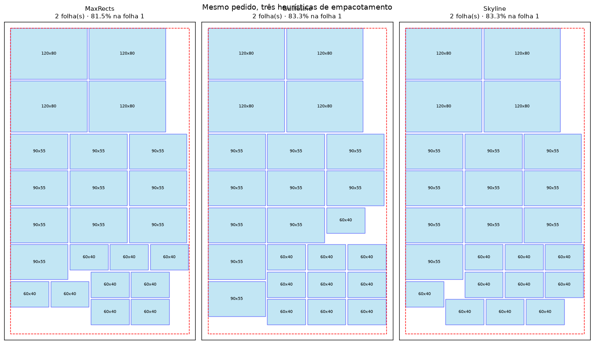

Simulador de Empacotamento 2D
Otimização de corte para reduzir desperdício de matéria-prima, desenvolvido como TCC em Engenharia de Produção no Instituto Mauá de Tecnologia.
O contexto
Gráficas e indústrias cortam rótulos e adesivos a partir de folhas grandes de matéria-prima. Quando o arranjo das peças na folha é definido manualmente, sobra material entre os cortes, e cada ponto percentual de desperdício vira custo direto de insumo. O problema de decidir o melhor arranjo é um clássico da pesquisa operacional: o 2D bin packing, computacionalmente intratável de resolver por força bruta.
A solução
Um simulador interativo em Streamlit: o usuário informa as dimensões da folha, margens, espaçamento entre peças e o mix de rótulos do pedido. O motor de otimização testa heurísticas clássicas de empacotamento (MaxRects, Guillotine e Skyline, via rectpack), busca o menor número de folhas capaz de alocar todas as peças e apresenta o layout de corte com métricas de utilização e desperdício, com exportação em PNG e CSV.


Destaques técnicos
- Busca incremental do número mínimo de folhas, partindo do limite inferior teórico (área total ÷ área útil) e dobrando até alocar todas as peças.
- Precisão dimensional: cálculos em décimos de milímetro com inteiros, evitando erros de ponto flutuante no encaixe.
- Dois modos de operação: agrupado (mistura rótulos para máximo aproveitamento) e único (uma folha por tipo de rótulo).
- Suporte a rotação de peças, margens de impressão e espaçamento de corte configuráveis.
- Arquitetura modular (packing · plotting · utils) com separação clara entre motor de otimização e interface.